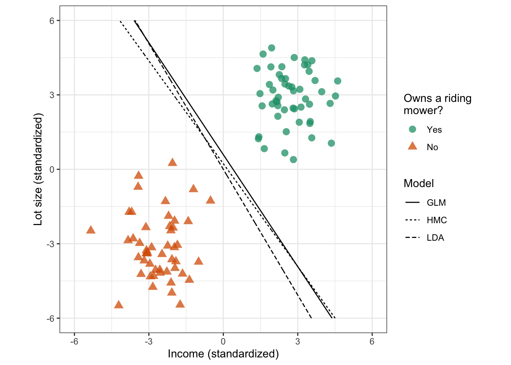

Lesson 8
Support Vector Machines
Learning Objectives
After this lesson, students will be able to:
Describe the support vector machine (SVM) approach to classification.
Understand the role of kernels in SVM.
Use the
tidymodelsworkflow to fit and tune various SVM classification models.
Readings, etc.
For this lesson, refer to the following readings, etc.:
Read chapter 9 from of An Introduction to Statistical Learning (Tibshirani, James, and Trevor 2017). You may also want to read chapter 14 of Hands-On Machine Learning with R* (Boehmke and Greenwell 2019).
Overview
Support Vector Machines (SVM) are a class of powerful machine learning algorithms commonly used for classification tasks but can also be used for regression. The fundamental principle behind SVM is to find a hyperplane that maximizes the so-called margin between different classes in the data. This hyperplane serves as the decision boundary, where data points are classified into one of two or more classes based on their position relative to the hyperplane. SVM is particularly effective in scenarios where the classes are well-separated and works well in high-dimensional spaces. The choice of the kernel function in SVM allows it to handle non-linear data by mapping it to a higher-dimensional space, making it versatile for a wide range of classification problems.
Variations of SVM include: - Support Vector Machine with a Linear Kernel (Linear SVM) - Support Vector Machine with a Polynomial Kernel (Polynomial SVM) - Support Vector Machine with a Radial Basis Function Kernel (RBF SVM)
These variations offer flexibility to adapt to different data distributions. Additionally, SVM can be extended to multiclass classification by using techniques like one-vs-all. Despite its effectiveness, SVM’s performance can be sensitive to the choice of kernel and hyperparameters, and it may be computationally expensive for large data sets. However, it remains a valuable tool in the machine learning toolkit, especially when dealing with well-defined classes and both linear and non-linear data.
Hyperplanes and Margins
Recall that a linear equataion like
\[ f({\bf x}) = \beta_0 + \beta_1 x_1 + \beta_2 x_2 + \cdots + \beta_p x_p = 0 \]
determines a hyperplane in \(p\)-dimensional space. Figure 1 shows examples of hyperplanes in 2-D and 3-D feature space.
Code
# Construct data for plotting
x1 <- x2 <- seq(from = 0, to = 1, length = 100)
xgrid <- expand.grid(x1 = x1, x2 = x2)
y1 <- 1 + 2 * x1
y2 <- 1 + 2 * xgrid$x1 + 3 * xgrid$x2
# Hyperplane: p = 2
p1 <- lattice::xyplot(
x = y1 ~ x1,
type = "l",
col = "black",
xlab = expression(X[1]),
ylab = expression(X[2]),
main = expression({f(X)==1+2*X[1]-X[2]}==0),
scales = list(tck = c(1, 0))
)
# Hyperplane: p = 3
p2 <- lattice::wireframe(
x = y2 ~ xgrid$x1 * xgrid$x2,
xlab = expression(X[1]),
ylab = expression(X[2]),
zlab = expression(X[3]),
main = expression({f(X)==1+2*X[1]+3*X[2]-X[3]}==0),
drape = TRUE,
colorkey = FALSE,
col = dark2[1],
scales = list(arrows = FALSE)
# par.settings = list(axis.line = list(col = "transparent"))
)
# Display plots side by side
gridExtra::grid.arrange(p1, p2, nrow = 1)
Further, a hyperplane separates the feature space into two half-spaces. Namely, \(f({\bf x}) > 0\) and \(f({\bf x}) < 0\). We can try to use this geometric fact to classify observations into two classes. For example, we can classify an observation \({\bf x}_i\) as belonging to class \(y_{i} = 1\) if \(f({\bf x}_i) > 0\) and as belonging to class \(y_{i} = -1\) if \(f({\bf x}_i) < 0\). Note that this can be summarized as:
\({\bf x}_i\) belongs to class \(y_{i}\) if \(y_i \times f({\bf x}_i) > 0\)
In such a case, we refer to the hyperplane as a decision boundary. If a hyperplane separates the feature space into two half-spaces in such a way as to distinguish binary classes, then we call that hyperplane a separating hyperplane. The problem is that in general there can be an infinite number of separating hyperplanes for a given data set. For example, Figure 2 shows multiple separating hyperplanes for a simulated data set with two classes.
Code
# Simulate data
set.seed(805)
norm2d <- as.data.frame(mlbench::mlbench.2dnormals(
n = 100,
cl = 2,
r = 4,
sd = 1
))
names(norm2d) <- c("x1", "x2", "y") # rename columns
# Scatterplot
p1 <- ggplot(norm2d, aes(x = x1, y = x2)) +
geom_point(aes(shape = y, color = y), size = 3, alpha = 0.75) +
xlab("Income (standardized)") +
ylab("Lot size (standardized)") +
xlim(-6, 6) +
ylim(-6, 6) +
coord_fixed() +
theme(legend.position = "none") +
theme_bw() +
scale_shape_discrete(
name = "Owns a riding\nmower?",
breaks = c(1, 2),
labels = c("Yes", "No")
) +
scale_color_brewer(
name = "Owns a riding\nmower?",
palette = "Dark2",
breaks = c(1, 2),
labels = c("Yes", "No")
)
# Fit a Logistic regression, linear discriminant analysis (LDA), and optimal
# separating hyperplane (OSH). Note: we sometimes refer to the OSH as the hard
# margin classifier
fit_glm <- glm(as.factor(y) ~ ., data = norm2d, family = binomial)
fit_lda <- MASS::lda(as.factor(y) ~ ., data = norm2d)
invisible(capture.output(fit_hmc <- ksvm( # use ksvm() to find the OSH
x = data.matrix(norm2d[c("x1", "x2")]),
y = as.factor(norm2d$y),
kernel = "vanilladot", # no fancy kernel, just ordinary dot product
C = Inf, # to approximate hard margin classifier
prob.model = TRUE # needed to obtain predicted probabilities
)))
# Grid over which to evaluate decision boundaries
npts <- 500
xgrid <- expand.grid(
x1 = seq(from = -6, 6, length = npts),
x2 = seq(from = -6, 6, length = npts)
)
# Predicted probabilities (as a two-column matrix)
prob_glm <- predict(fit_glm, newdata = xgrid, type = "response")
prob_glm <- cbind("1" = 1 - prob_glm, "2" = prob_glm)
prob_lda <- predict(fit_lda, newdata = xgrid)$posterior
prob_hmc <- predict(fit_hmc, newdata = xgrid, type = "probabilities")
# Add predicted class probabilities
xgrid2 <- xgrid %>%
cbind("GLM" = prob_glm[, 1L],
"LDA" = prob_lda[, 1L],
"HMC" = prob_hmc[, 1L]) %>%
tidyr::gather(Model, Prob, -x1, -x2)
# Scatterplot with decision boundaries
p2 <- p1 +
stat_contour(data = xgrid2, aes(x = x1, y = x2, z = Prob, linetype = Model),
breaks = 0.5, color = "black")
# Display plots side by side
p2
Thus, our problem is to find a separating hyperplane that is “best” in some particular sense. Of course, whatever “best” means it should be with respect to performance on a test set and not with respect to performance on the training set. Otherwise, we will overfit the training data. The intuitive idea is to find a separating hyperplane which as a decision boundary provides the maximum separation between the two classes.
Maximal Marginal Classifier
This is illustrated in Figure 3. The solid line is the decision boundary and the dotted lines are the margins. The margin is the distance between the decision boundary and the closest observation from either class. The observations that are closest to the decision boundary are called support vectors. The decision boundary is called the maximal margin classifier.

The maximal margin classifier is constructed as a solution to the following optimization problem:
\[ \text{maximize}_{\beta_0,\beta_{1},\ldots, \beta_{p}} M \]
subject to
\[ \begin{align*} & \sum_{j=1}^{p} \beta_{j}^{2} = 1 \\ & y_{i}\left(\beta_{0} + \sum_{j=1}^{p} \beta_{j} x_{ij}\right) \geq M, \end{align*} \]
for all \(i = 1, 2, \ldots, n\). Put differently, the maximal margin classifier finds the separating hyperplane that provides the largest margin/gap between the two classes. The width of both margin boundaries is
\(M\).
What is it is not possible to perfectly separate the two classes? That is, what if there is no separating hyperplane? In this case, we can allow some observations to be on the wrong side of the margin boundaries. This is called a soft margin classifier or support vector classifier. The soft margin classifier is constructed as a solution to the following optimization problem:
Support Vector Classifier
Code
# Fit the entire regularization path
fit_smc <- svmpath(
x = data.matrix(norm2d[c("x1", "x2")]),
y = ifelse(norm2d$y == 1, 1, -1)
)
# Plot both extremes
p1 <- plot_svmpath(fit_smc, step = max(fit_smc$Step), main = expression(C == 0))
p2 <- plot_svmpath(fit_smc, step = min(fit_smc$Step), main = expression(C == infinity))
gridExtra::grid.arrange(p1, p2, nrow = 1)
Support Vector Machines
Code
# Simulate data
set.seed(1432)
circle <- as.data.frame(mlbench::mlbench.circle(
n = 200,
d = 2
))
names(circle) <- c("x1", "x2", "y") # rename columns
# Fit a support vector machine (SVM)
fit_svm_poly <- ksvm(
x = data.matrix(circle[c("x1", "x2")]),
y = as.factor(circle$y),
kernel = "polydot", # polynomial kernel
kpar = list(degree = 2), # kernel parameters
C = Inf, # to approximate maximal margin classifier
prob.model = TRUE # needed to obtain predicted probabilities
)
# Grid over which to evaluate decision boundaries
npts <- 500
xgrid <- expand.grid(
x1 = seq(from = -1.25, 1.25, length = npts),
x2 = seq(from = -1.25, 1.25, length = npts)
)
# Predicted probabilities (as a two-column matrix)
prob_svm_poly <- predict(fit_svm_poly, newdata = xgrid, type = "probabilities")
# Scatterplot
p1 <- contourplot(
x = prob_svm_poly[, 1] ~ x1 * x2,
data = xgrid,
at = 0,
labels = FALSE,
scales = list(tck = c(1, 0)),
xlab = "x1",
ylab = "x2",
main = "Original feature space",
panel = function(x, y, z, ...) {
panel.contourplot(x, y, z, ...)
panel.xyplot(
x = circle$x1,
y = circle$x2,
groups = circle$y,
pch = 19,
cex = 1,
col = adjustcolor(dark2[1L:2L], alpha.f = 0.5),
...
)
}
)
# Enlarge feature space
circle_3d <- circle
circle_3d$x3 <- circle_3d$x1^2 + circle_3d$x2^2
# 3-D scatterplot
p2 <- cloud(
x = x3 ~ x1 * x2,
data = circle_3d,
groups = y,
main = "Enlarged feature space",
par.settings = list(
superpose.symbol = list(
pch = 19,
cex = 1,
col = adjustcolor(dark2[1L:2L], alpha.f = 0.5)
)
)
)
# Scatterplot with decision boundary
p3 <- contourplot(
x = prob_svm_poly[, 1] ~ x1 * x2,
data = xgrid,
at = 0.5,
labels = FALSE,
scales = list(tck = c(1, 0)),
xlab = "x1",
ylab = "x2",
main = "Non-linear decision boundary",
panel = function(x, y, z, ...) {
panel.contourplot(x, y, z, ...)
panel.xyplot(
x = circle$x1,
y = circle$x2,
groups = circle$y,
pch = 19,
cex = 1,
col = adjustcolor(dark2[1L:2L], alpha.f = 0.5),
...
)
}
)
# Combine plots
gridExtra::grid.arrange(p1, p2, p3, nrow = 1)Summary
Support Vector Machines (SVM) are a powerful and versatile class of supervised machine learning algorithms for classification.
Key Concepts
Maximizing Margin: SVM’s primary objective is to find a decision boundary that maximizes the margin between different classes of data points. This boundary is called the “hyperplane.”
Linear Separability: SVM works well when data is linearly separable, meaning that it can be separated by a straight line (in 2D), a plane (in 3D), or a hyperplane (in higher dimensions).
Support Vectors: The data points that are closest to the hyperplane and influence its position are called “support vectors.” These support vectors play a crucial role in defining the decision boundary.
Kernel Tricks: SVM can handle non-linear data by applying kernel functions (e.g., polynomial, radial basis function) that transform the data into a higher-dimensional space, where it becomes linearly separable.
SVM Classification Process
Data Preparation: SVM begins with labeled training data, where each data point is associated with a class label.
Model Training: The SVM algorithm learns the optimal hyperplane that best separates the classes while maximizing the margin. The hyperplane equation can be expressed as \(f(x) = \mathbf{w} \cdot \mathbf{x} + b\), where \(\mathbf{w}\) is the weight vector and \(b\) is the bias term.
Margin Calculation: The margin is determined by the distance between the hyperplane and the nearest support vectors from each class.
Classification: To predict the class of a new data point, SVM evaluates \(f(x)\). If \(f(x) > 0\), the point is classified into one class; if \(f(x) < 0\), it’s classified into the other class.
Hyperparameter Tuning
C Parameter: It controls the trade-off between maximizing the margin and minimizing the classification error. Smaller values of C create a wider margin but may misclassify some points, while larger values of C lead to a narrower margin but fewer misclassifications.
Kernel Type: The choice of kernel function, such as linear, polynomial, or radial basis function, can significantly impact the model’s ability to handle non-linear data.
Advantages of SVM
- Effective in high-dimensional spaces.
- Robust against overfitting.
- Suitable for small to large datasets.
- Works well with both linear and non-linear data.
Limitations
- Computationally expensive for large datasets.
- Sensitivity to the choice of kernel and hyperparameters.
- Can be challenging to interpret in high-dimensional spaces.
SVM is a versatile algorithm widely used for classification tasks, especially when dealing with well-defined classes and both linear and non-linear data. It’s essential to understand its hyperparameters and the choice of kernel functions to maximize its effectiveness in different scenarios.
References
Boehmke, Brad, and Brandon M Greenwell. 2019. Hands-on Machine Learning with r. CRC press.
Tibshirani, Hastie Robert, Gareth James, and Daniela Witten Trevor. 2017. An Introduction to Statistical Learning. springer publication.
Expand for Session Info
─ Session info ───────────────────────────────────────────────────────────────
setting value
version R version 4.3.1 (2023-06-16)
os macOS Sonoma 14.0
system aarch64, darwin20
ui X11
language (EN)
collate en_US.UTF-8
ctype en_US.UTF-8
tz America/New_York
date 2023-10-27
pandoc 3.1.8 @ /opt/homebrew/bin/ (via rmarkdown)
quarto 1.3.450 @ /usr/local/bin/quarto
─ Packages ───────────────────────────────────────────────────────────────────
package * version date (UTC) lib source
broom * 1.0.5 2023-06-09 [1] CRAN (R 4.3.0)
caret * 6.0-94 2023-03-21 [1] CRAN (R 4.3.0)
dials * 1.2.0 2023-04-03 [1] CRAN (R 4.3.0)
dplyr * 1.1.3 2023-09-03 [1] CRAN (R 4.3.0)
forcats * 1.0.0 2023-01-29 [1] CRAN (R 4.3.0)
ggplot2 * 3.4.4 2023-10-12 [1] CRAN (R 4.3.1)
infer * 1.0.5 2023-09-06 [1] CRAN (R 4.3.0)
ISLR2 * 1.3-2 2022-11-20 [1] CRAN (R 4.3.0)
kernlab * 0.9-32 2023-01-31 [1] CRAN (R 4.3.0)
lattice * 0.22-5 2023-10-24 [1] CRAN (R 4.3.1)
lubridate * 1.9.3 2023-09-27 [1] CRAN (R 4.3.1)
modeldata * 1.2.0 2023-08-09 [1] CRAN (R 4.3.0)
parsnip * 1.1.1 2023-08-17 [1] CRAN (R 4.3.0)
pdp * 0.8.1 2022-06-07 [1] CRAN (R 4.3.0)
purrr * 1.0.2 2023-08-10 [1] CRAN (R 4.3.0)
readr * 2.1.4 2023-02-10 [1] CRAN (R 4.3.0)
recipes * 1.0.8 2023-08-25 [1] CRAN (R 4.3.0)
rsample * 1.2.0 2023-08-23 [1] CRAN (R 4.3.0)
scales * 1.2.1 2022-08-20 [1] CRAN (R 4.3.0)
sessioninfo * 1.2.2 2021-12-06 [1] CRAN (R 4.3.0)
stringr * 1.5.0 2022-12-02 [1] CRAN (R 4.3.0)
svmpath * 0.970 2020-07-14 [1] CRAN (R 4.3.0)
tibble * 3.2.1 2023-03-20 [1] CRAN (R 4.3.0)
tidymodels * 1.1.1 2023-08-24 [1] CRAN (R 4.3.0)
tidyr * 1.3.0 2023-01-24 [1] CRAN (R 4.3.0)
tidyverse * 2.0.0 2023-02-22 [1] CRAN (R 4.3.0)
tune * 1.1.2 2023-08-23 [1] CRAN (R 4.3.0)
vip * 0.4.1 2023-08-21 [1] CRAN (R 4.3.0)
workflows * 1.1.3 2023-02-22 [1] CRAN (R 4.3.0)
workflowsets * 1.0.1 2023-04-06 [1] CRAN (R 4.3.0)
yardstick * 1.2.0 2023-04-21 [1] CRAN (R 4.3.0)
[1] /Library/Frameworks/R.framework/Versions/4.3-arm64/Resources/library
──────────────────────────────────────────────────────────────────────────────
Reuse
CC BY-NC-SA 4.0